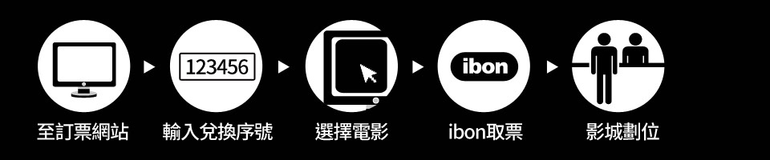

【活動辦法:】
活動登記時間:8/8 10:00-8/14 10:00
活動說明:活動期間於東森購物網全站累積消費實付發票金額滿$2,588元，無取消/退或，並於活動期間成功完成表單登記，即可獲得<驅魔使者>或<貞子>免費電影兌換券一組(兩張)，一筆訂單可登記兩部電影，<驅魔使者>、<貞子>將會於9/2號抽出各20名，並於9/3號由簡訊發送電影序號。
【電影序號兌換說明:】
IBON兌換方式:

電影序號兌換網站: >>點我<<
【電影序號發送說明:】
序號將發送至會員帳號登錄之手機號碼，如因個人設定或個人因素而無法收到簡訊，恕無法補發。
【電影序號注意事項:】
◆本優惠序號不得與其他優惠合併使用，每人即每一車庫娛樂會員帳號僅限使用一組序號兌換指定電影票一張，獲得兩組序號者應由兩人以不同會員帳號分別兌換。兌換電影票時會員應先完成手機號碼驗證，並依據不同的取票方式，另行支付取票手續費。
◆本優惠序號為無償發行的優惠卷，不得轉售或轉贈、僅限使用一次、不得要求兌換現金或其他商品或服務，並僅限於兌換期限內使用完畢，逾期失效，遺失恕不補發。
◆中獎人憑簡訊中的電子序號可至車庫娛樂線上兌換電影票，兌換電影票應依據不同的取票方式，另行支付取票手續費。
【權益與說明:】
◆電影序號兌換之電影票可觀賞的上映影城、時間、場次等，均由影城安排，車庫娛樂與東森購物網恕不提供任何擔保。
◆詳細兌換方式以車庫娛樂訂票網頁之規定與說明為準，車庫娛樂並保留取消、終止、修改本活動的一切權利。若有任何兌換使用上之問題，請洽車庫娛樂客服信箱support@gpx.tw，東森購物網將不提供兌換說明之服務。
◆東森購物網保有活動變更之權益。